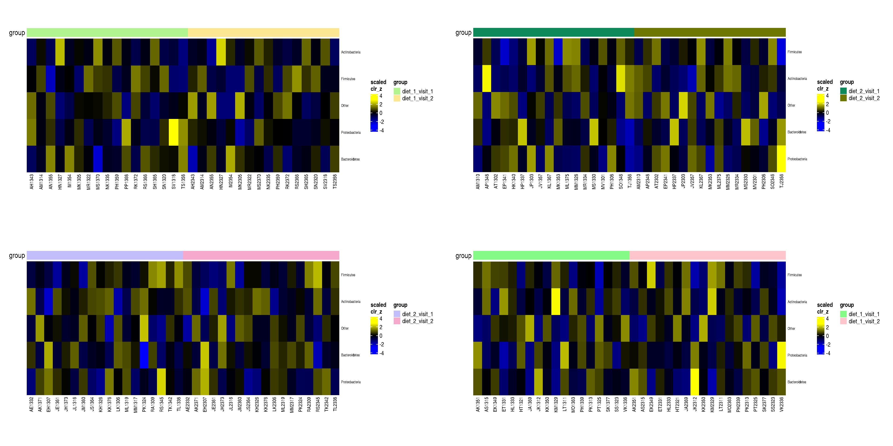
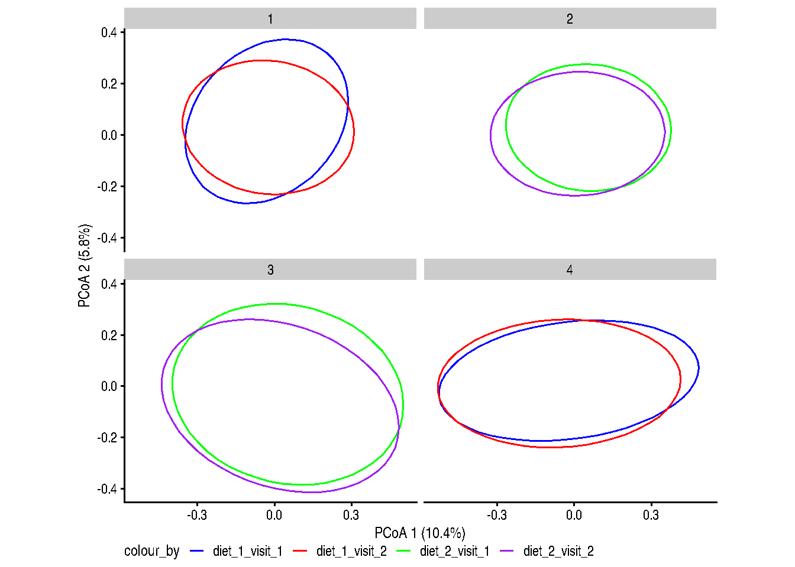
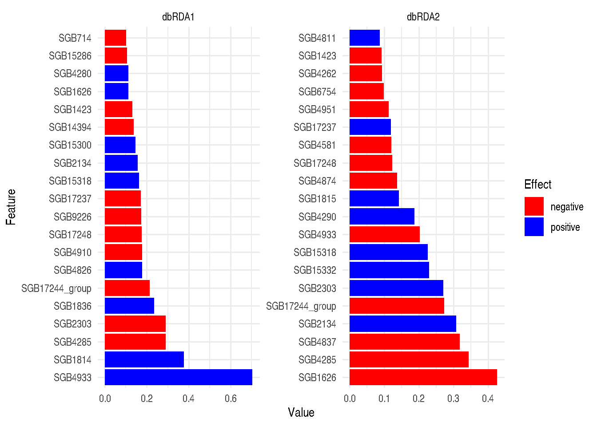
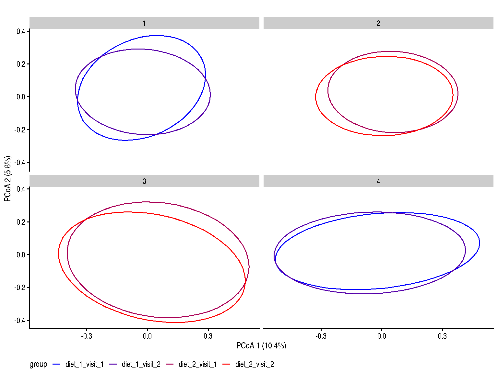
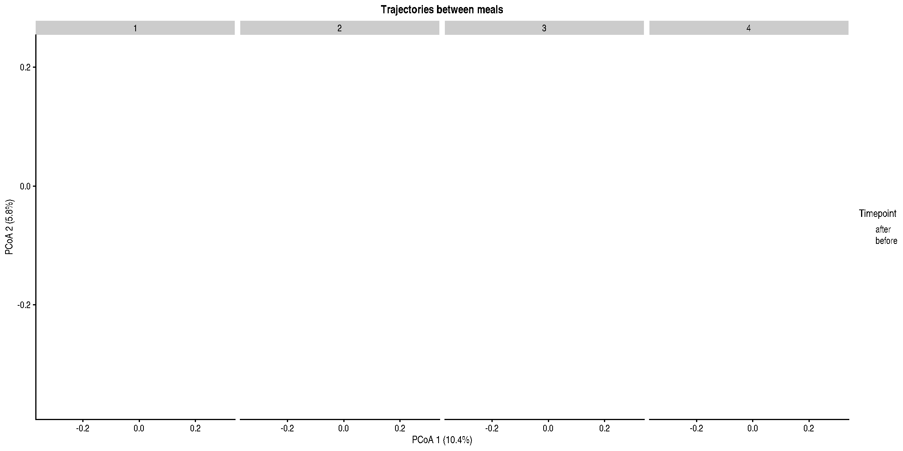
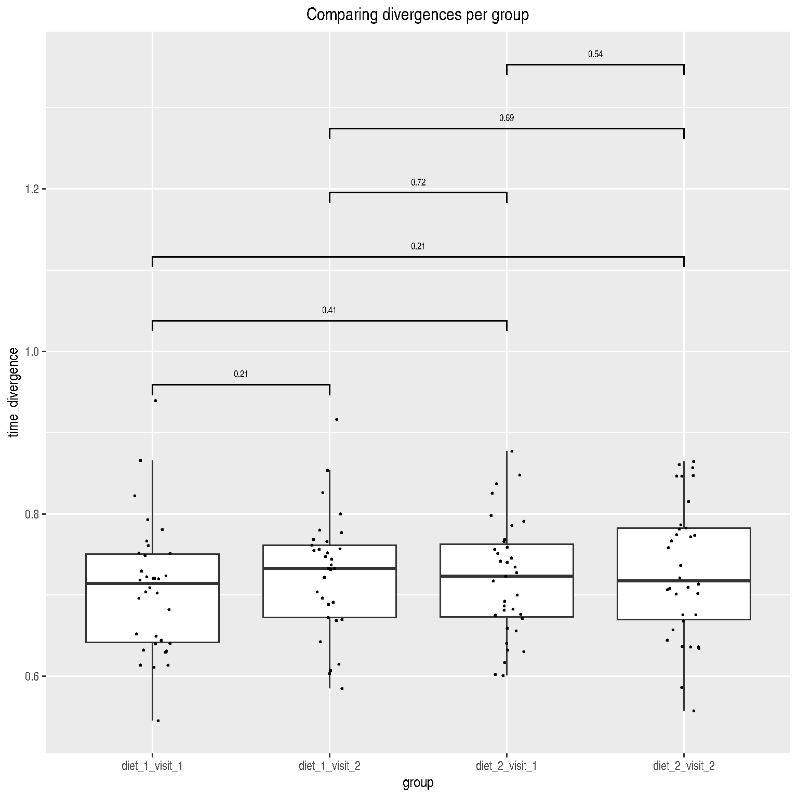

Beta diversity
1 Community composition
This section reports on a microbiota project results of community composition across different diets and visits.
Groups
1.1 Phylum
1.2 Genus

1.3 Heatmap

2 Unsupervised analysis
2.1 Community dissimilarity
This document presents the results of a microbiota project, focusing on beta diversity analysis. Specifically, in this section, we employed Principal Coordinates Analysis (PCoA) to assess community dissimilarity among microbiota samples.
Taxonomic level: species
Dissimilarity index: bray
Group variable: group
PCoA plots

2.2 Significant variables

2.3 Significant taxa

3 Supervised analysis
3.1 Permanova analysis
4 Alternate analysis



4.1 Data Summary
class: TreeSummarizedExperiment
dim: 1700 140
metadata(0):
assays(2): counts relabundance
rownames(1700): SGB4933 SGB4285 ... SGB15018 SGB4921
rowData names(9): kingdom phylum ... strain clade_name
colnames(140): AE1332 AK1371 ... TS2358 VK2336
colData names(15): sample id ... time_difference time_divergence
reducedDimNames(1): PCoA_BC
mainExpName: NULL
altExpNames(10): PrevalentGenus PrevalentSpecies ... species strain
rowLinks: NULL
rowTree: NULL
colLinks: NULL
colTree: NULL5 Version info
R version 4.3.2 (2023-10-31)
Platform: x86_64-pc-linux-gnu (64-bit)
Running under: Ubuntu 23.10
Matrix products: default
BLAS: /home/leo/bin/R-4.3.2/lib/libRblas.so
LAPACK: /usr/lib/x86_64-linux-gnu/openblas-pthread/liblapack.so.3; LAPACK version 3.11.0
locale:
[1] LC_CTYPE=en_US.UTF-8 LC_NUMERIC=C
[3] LC_TIME=en_US.UTF-8 LC_COLLATE=en_US.UTF-8
[5] LC_MONETARY=en_US.UTF-8 LC_MESSAGES=en_US.UTF-8
[7] LC_PAPER=en_US.UTF-8 LC_NAME=C
[9] LC_ADDRESS=C LC_TELEPHONE=C
[11] LC_MEASUREMENT=en_US.UTF-8 LC_IDENTIFICATION=C
time zone: Europe/Helsinki
tzcode source: system (glibc)
attached base packages:
[1] stats4 grid stats graphics grDevices utils datasets
[8] methods base
other attached packages:
[1] vegan_2.7-0 lattice_0.22-6
[3] permute_0.9-7 lubridate_1.9.4
[5] forcats_1.0.0 stringr_1.5.1
[7] purrr_1.0.2 readr_2.1.5
[9] tibble_3.2.1 tidyverse_2.0.0
[11] tidyr_1.3.1 sechm_1.10.0
[13] ComplexHeatmap_2.18.0 scater_1.33.4
[15] scuttle_1.12.0 quarto_1.4.4
[17] patchwork_1.3.0 parameters_0.24.0
[19] multtest_2.58.0 miaTime_0.1.21
[21] miaViz_1.15.4 ggraph_2.2.1
[23] mia_1.15.6 TreeSummarizedExperiment_2.10.0
[25] Biostrings_2.70.3 XVector_0.42.0
[27] SingleCellExperiment_1.24.0 MultiAssayExperiment_1.28.0
[29] SummarizedExperiment_1.32.0 Biobase_2.62.0
[31] GenomicRanges_1.54.1 GenomeInfoDb_1.38.8
[33] IRanges_2.36.0 S4Vectors_0.40.2
[35] BiocGenerics_0.48.1 MatrixGenerics_1.14.0
[37] matrixStats_1.4.1 gridExtra_2.3
[39] gtsummary_2.0.4 ggsignif_0.6.4
[41] ggpubr_0.6.0 ggplot2_3.5.1
[43] DT_0.33 dplyr_1.1.4
[45] cardx_0.2.2 ANCOMBC_2.4.0
loaded via a namespace (and not attached):
[1] randomcoloR_1.1.0.1 gld_2.6.6
[3] nnet_7.3-19 TH.data_1.1-2
[5] vctrs_0.6.5 energy_1.7-12
[7] digest_0.6.37 png_0.1-8
[9] shape_1.4.6.1 proxy_0.4-27
[11] Exact_3.3 registry_0.5-1
[13] rbiom_1.0.3 ggrepel_0.9.6
[15] bayestestR_0.15.0 magick_2.8.5
[17] mediation_4.5.0 MASS_7.3-60.0.1
[19] reshape2_1.4.4 foreach_1.5.2
[21] withr_3.0.2 xfun_0.49
[23] ggfun_0.1.8 survival_3.8-3
[25] doRNG_1.8.6 memoise_2.0.1
[27] ggbeeswarm_0.7.2 emmeans_1.10.6
[29] gmp_0.7-5 tidytree_0.4.6
[31] zoo_1.8-12 GlobalOptions_0.1.2
[33] gtools_3.9.5 V8_6.0.0
[35] Formula_1.2-5 datawizard_0.13.0
[37] httr_1.4.7 rstatix_0.7.2
[39] ps_1.8.1 rstudioapi_0.17.1
[41] generics_0.1.3 base64enc_0.1-3
[43] processx_3.8.4 curl_6.0.1
[45] zlibbioc_1.48.2 ScaledMatrix_1.10.0
[47] polyclip_1.10-7 ca_0.71.1
[49] GenomeInfoDbData_1.2.11 SparseArray_1.2.4
[51] xtable_1.8-4 doParallel_1.0.17
[53] evaluate_1.0.1 S4Arrays_1.2.1
[55] hms_1.1.3 irlba_2.3.5.1
[57] colorspace_2.1-1 readxl_1.4.3
[59] magrittr_2.0.3 later_1.4.1
[61] viridis_0.6.5 ggtree_3.10.1
[63] DECIPHER_2.30.0 cowplot_1.1.3
[65] class_7.3-22 Hmisc_5.2-1
[67] pillar_1.10.0 nlme_3.1-166
[69] iterators_1.0.14 decontam_1.22.0
[71] compiler_4.3.2 beachmat_2.18.1
[73] stringi_1.8.4 DescTools_0.99.58
[75] TSP_1.2-4 tokenizers_0.3.0
[77] minqa_1.2.8 plyr_1.8.9
[79] crayon_1.5.3 abind_1.4-8
[81] gridGraphics_0.5-1 haven_2.5.4
[83] graphlayouts_1.2.1 bit_4.5.0.1
[85] rootSolve_1.8.2.4 sandwich_3.1-1
[87] codetools_0.2-20 multcomp_1.4-26
[89] BiocSingular_1.18.0 crosstalk_1.2.1
[91] bslib_0.8.0 slam_0.1-55
[93] e1071_1.7-16 lmom_3.2
[95] GetoptLong_1.0.5 tidytext_0.4.2
[97] splines_4.3.2 circlize_0.4.16
[99] Rcpp_1.0.13-1 sparseMatrixStats_1.14.0
[101] cellranger_1.1.0 knitr_1.49
[103] blob_1.2.4 clue_0.3-66
[105] lme4_1.1-35.5 fs_1.6.5
[107] checkmate_2.3.2 DelayedMatrixStats_1.24.0
[109] Rdpack_2.6.2 expm_1.0-0
[111] gsl_2.1-8 ggplotify_0.1.2
[113] estimability_1.5.1 Matrix_1.6-5
[115] tzdb_0.4.0 lpSolve_5.6.23
[117] tweenr_2.0.3 pkgconfig_2.0.3
[119] tools_4.3.2 cachem_1.1.0
[121] rbibutils_2.3 RSQLite_2.3.9
[123] viridisLite_0.4.2 DBI_1.2.3
[125] numDeriv_2016.8-1.1 fastmap_1.2.0
[127] rmarkdown_2.29 scales_1.3.0
[129] cards_0.4.0 sass_0.4.9
[131] broom_1.0.7 coda_0.19-4.1
[133] insight_1.0.0 carData_3.0-5
[135] rpart_4.1.23 farver_2.1.2
[137] tidygraph_1.3.1 mgcv_1.9-1
[139] yaml_2.3.10 foreign_0.8-87
[141] cli_3.6.3 lifecycle_1.0.4
[143] mvtnorm_1.3-2 bluster_1.12.0
[145] backports_1.5.0 BiocParallel_1.36.0
[147] timechange_0.3.0 gtable_0.3.6
[149] rjson_0.2.23 parallel_4.3.2
[151] ape_5.8-1 SnowballC_0.7.1
[153] CVXR_1.0-15 jsonlite_1.8.9
[155] seriation_1.5.7 bitops_1.0-9
[157] bit64_4.5.2 Rtsne_0.17
[159] yulab.utils_0.1.8 BiocNeighbors_1.20.2
[161] RcppParallel_5.1.9 janeaustenr_1.0.0
[163] jquerylib_0.1.4 lazyeval_0.2.2
[165] htmltools_0.5.8.1 glue_1.8.0
[167] RCurl_1.98-1.16 treeio_1.26.0
[169] boot_1.3-31 igraph_2.1.2
[171] R6_2.5.1 Rmpfr_1.0-0
[173] labeling_0.4.3 cluster_2.1.8
[175] rngtools_1.5.2 aplot_0.2.4
[177] nloptr_2.1.1 DirichletMultinomial_1.44.0
[179] DelayedArray_0.28.0 tidyselect_1.2.1
[181] vipor_0.4.7 htmlTable_2.4.3
[183] ggforce_0.4.2 car_3.1-3
[185] rsvd_1.0.5 munsell_0.5.1
[187] data.table_1.16.4 htmlwidgets_1.6.4
[189] RColorBrewer_1.1-3 rlang_1.1.4
[191] lmerTest_3.1-3 ggnewscale_0.5.0
[193] Cairo_1.6-2 beeswarm_0.4.0